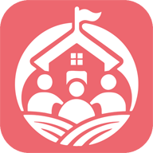

<!DOCTYPE html>
<html lang="id">
<head>
<meta charset="UTF-8">
<meta name="viewport" content="width=device-width, initial-scale=1.0">
<title>SINTESA — Portal Data Bidang PKD</title>

<link rel="manifest" href="manifest.json">
<meta name="theme-color" content="#3a2c2f">
<meta name="mobile-web-app-capable" content="yes">
<meta name="apple-mobile-web-app-capable" content="yes">
<meta name="apple-mobile-web-app-status-bar-style" content="black-translucent">
<meta name="apple-mobile-web-app-title" content="SINTESA">
<link rel="icon" href="icons/favicon-32.png" sizes="32x32" type="image/png">
<link rel="icon" href="icons/icon-192.png" sizes="192x192" type="image/png">
<link rel="apple-touch-icon" href="icons/apple-touch-icon.png">

<style>
  :root{
    --coral:#e8697c;
    --coral-deep:#c94f63;
    --ink:#3a2c2f;
    --cream:#fbf3ee;
    --sidebar-w: 84px;
    --sidebar-w-expanded: 240px;
  }

  *{box-sizing:border-box;}

  html,body{
    margin:0;
    height:100%;
    overflow:hidden;
    font-family:'Trebuchet MS','Segoe UI',sans-serif;
    background:var(--cream);
    color:var(--ink);
  }

  #app{
    display:flex;
    height:100vh;
    width:100vw;
  }

  /* ============== SIDEBAR ============== */
  #sidebar{
    width:var(--sidebar-w);
    flex:0 0 var(--sidebar-w);
    background:linear-gradient(180deg,var(--ink) 0%, #2c2224 100%);
    display:flex;
    flex-direction:column;
    align-items:center;
    padding:18px 0;
    transition:flex-basis .22s ease, width .22s ease;
    z-index:100;
    position:relative;
  }

  #sidebar.expanded{
    width:var(--sidebar-w-expanded);
    flex-basis:var(--sidebar-w-expanded);
  }

  .brand{
    width:100%;
    display:flex;
    flex-direction:column;
    align-items:center;
    padding:0 10px 18px;
    margin-bottom:8px;
    border-bottom:1px solid rgba(255,255,255,.12);
  }
  .brand .mark{
    width:42px;height:42px;
    aspect-ratio:1/1;
    border-radius:12px;
    background:linear-gradient(135deg,var(--coral),var(--coral-deep));
    display:flex;align-items:center;justify-content:center;
    font-weight:800;color:#fff;font-size:1rem;
    letter-spacing:.02em;
    flex:0 0 42px;
    box-shadow:0 6px 16px -6px rgba(232,105,124,.6);
    overflow:hidden;
    padding:6px;
  }
  .brand .mark img{
    width:100%;
    height:100%;
    aspect-ratio:1/1;
    object-fit:contain;
    display:block;
  }
  .brand .full-name{
    color:#fff;
    font-size:.68rem;
    font-weight:700;
    letter-spacing:.06em;
    text-transform:uppercase;
    margin-top:10px;
    text-align:center;
    opacity:0;
    max-height:0;
    overflow:hidden;
    transition:opacity .18s ease;
  }
  #sidebar.expanded .brand .full-name{
    opacity:.85;
    max-height:40px;
    margin-top:10px;
  }

  nav#menu{
    width:100%;
    display:flex;
    flex-direction:column;
    gap:6px;
    padding:10px 10px;
    overflow-y:auto;
    flex:1 1 auto;
  }

  .menu-item{
    display:flex;
    align-items:center;
    justify-content:center;
    gap:0;
    width:48px;
    height:48px;
    margin:0 auto;
    padding:0;
    border-radius:14px;
    background:transparent;
    border:none;
    cursor:pointer;
    color:rgba(255,255,255,.68);
    text-align:left;
    position:relative;
    flex:0 0 auto;
    transition:background .15s ease, color .15s ease, width .18s ease, height .18s ease, padding .18s ease;
  }
  .menu-item:hover{
    background:rgba(255,255,255,.08);
    color:#fff;
  }
  .menu-item.active{
    background:linear-gradient(135deg,var(--coral),var(--coral-deep));
    color:#fff;
    box-shadow:0 6px 18px -6px rgba(232,105,124,.55);
  }
  .menu-item .icon{
    flex:0 0 22px;
    width:22px;height:22px;
    aspect-ratio:1/1;
    display:flex;align-items:center;justify-content:center;
    background-color:currentColor;
    -webkit-mask-image:var(--icon-url);
    mask-image:var(--icon-url);
    -webkit-mask-repeat:no-repeat;
    mask-repeat:no-repeat;
    -webkit-mask-position:center;
    mask-position:center;
    -webkit-mask-size:contain;
    mask-size:contain;
  }
  .menu-item .label{
    font-size:.78rem;
    font-weight:700;
    white-space:normal;
    word-break:break-word;
    line-height:1.25;
    opacity:0;
    max-width:0;
    flex:1 1 auto;
    min-width:0;
    overflow:hidden;
    transition:opacity .15s ease;
  }
  #sidebar.expanded .menu-item .label{
    opacity:1;
    max-width:100%;
  }
  #sidebar.expanded .menu-item{
    width:100%;
    height:auto;
    margin:0;
    justify-content:flex-start;
    align-items:flex-start;
    gap:12px;
    padding:11px 12px;
  }
  #sidebar.expanded .menu-item .icon{
    margin-top:1px;
  }

  /* tooltip melayang saat sidebar tertutup — di-render di body via JS
     supaya tidak pernah terpotong oleh overflow nav#menu */
  .menu-item .tip{
    display:none;
  }
  #floatingTip{
    position:fixed;
    background:#fff;
    color:var(--ink);
    padding:9px 13px;
    border-radius:9px;
    max-width:230px;
    box-shadow:0 12px 26px -8px rgba(0,0,0,.35);
    opacity:0;
    visibility:hidden;
    pointer-events:none;
    transform:translateY(-50%) translateX(0);
    transition:opacity .15s ease, transform .15s ease;
    z-index:500;
  }
  #floatingTip.show{
    opacity:1;
    visibility:visible;
    transform:translateY(-50%) translateX(4px);
  }
  #floatingTip .tip-title{
    font-size:.76rem;
    font-weight:800;
    white-space:normal;
    word-break:break-word;
    line-height:1.3;
  }
  #floatingTip .tip-desc{
    font-size:.66rem;
    font-weight:600;
    color:rgba(58,44,47,.65);
    white-space:normal;
    word-break:break-word;
    line-height:1.3;
    margin-top:2px;
  }

  #collapseToggle{
    width:100%;
    display:flex;
    align-items:center;
    justify-content:center;
    gap:10px;
    padding:12px 10px;
    background:transparent;
    border:none;
    border-top:1px solid rgba(255,255,255,.12);
    color:rgba(255,255,255,.55);
    cursor:pointer;
    flex:0 0 auto;
  }
  #collapseToggle:hover{ color:#fff; }
  #collapseToggle svg{
    width:18px;height:18px;
    stroke:currentColor;fill:none;stroke-width:2;
    transition:transform .22s ease;
  }
  #sidebar.expanded #collapseToggle svg{ transform:rotate(180deg); }
  #collapseToggle .clabel{
    font-size:.7rem;font-weight:700;
    opacity:0;max-width:0;overflow:hidden;white-space:nowrap;
    transition:opacity .15s ease;
  }
  #sidebar.expanded #collapseToggle .clabel{ opacity:.8; max-width:140px; }

  /* ============== KONTEN ============== */
  #content{
    flex:1 1 auto;
    position:relative;
    background:var(--cream);
    height:100vh;
  }

  .frame-wrap{
    position:absolute;
    inset:0;
    opacity:0;
    visibility:hidden;
    transition:opacity .18s ease;
  }
  .frame-wrap.active{
    opacity:1;
    visibility:visible;
  }

  .frame-wrap iframe{
    width:100%;
    height:100%;
    border:none;
    display:block;
    background:var(--cream);
  }

  .loading{
    position:absolute;
    inset:0;
    display:flex;
    align-items:center;
    justify-content:center;
    flex-direction:column;
    gap:12px;
    color:var(--ink);
    opacity:.6;
    font-size:.85rem;
    font-weight:700;
    pointer-events:none;
  }
  .loading .spinner{
    width:34px;height:34px;
    border-radius:50%;
    border:3px solid rgba(58,44,47,.15);
    border-top-color:var(--coral);
    animation:spin .8s linear infinite;
  }
  @keyframes spin{ to{ transform:rotate(360deg); } }

  /* scrollbar tipis untuk menu */
  nav#menu::-webkit-scrollbar{ width:5px; }
  nav#menu::-webkit-scrollbar-thumb{ background:rgba(255,255,255,.15); border-radius:10px; }

  @media (max-width:720px){
    :root{ --sidebar-w:64px; --sidebar-w-expanded:210px; }
    .brand .mark{ width:36px;height:36px;flex-basis:36px;font-size:.85rem; }
  }
</style>
</head>
<body>

<div id="app">
  <aside id="sidebar">
    <div class="brand">
      <div class="mark"></div>
      <div class="full-name">SINTESA DPMD KALBAR</div>
    </div>
    <nav id="menu"></nav>
    <button id="collapseToggle" title="Perluas / ciutkan menu">
      <svg viewBox="0 0 24 24"><path d="M9 18l6-6-6-6"/></svg>
      <span class="clabel"></span>
    </button>
  </aside>

  <main id="content"></main>
</div>

<div id="floatingTip"></div>

<script>
/* ============================================================
   KONFIGURASI MENU SIDEBAR
   ------------------------------------------------------------
   Tambah / ubah / hapus modul cukup dengan mengedit array MENU
   di bawah ini. Setiap item butuh:
     - id     : pengenal unik (dipakai untuk state aktif)
     - label  : nama singkat yang tampil di sidebar & judul tooltip
     - desc   : (opsional) kepanjangan/penjelasan, tampil sebagai
                subtitle di bawah judul pada tooltip melayang.
                Kosongkan ('') jika tidak perlu subtitle.
     - src    : path file HTML modul (di folder pages/)
     - icon   : path file SVG ikon (di folder icons/apps/) — sama
                seperti logo SINTESA, cukup GANTI FILE-nya di folder
                icons/apps/ untuk mengubah ikon, tidak perlu sentuh
                kode ini sama sekali. Warna ikon otomatis mengikuti
                status menu (normal/hover/aktif).
   ============================================================ */
const MENU = [
  {
    id: 'dashboard',
    label: 'Dashboard',
    desc: '',
    src: 'pages/page1.html',
    icon: 'icons/apps/dashboard.svg'
  },
  {
    id: 'sandi-desa',
    label: 'SANDI DESA',
    desc: 'Sistem Analisis Data dan Indeks Desa',
    src: 'pages/page2.html',
    icon: 'icons/apps/sandi-desa.svg'
  },
  {
    id: 'siperdin',
    label: 'SIPERDIN',
    desc: 'Sistem Informasi Perjalanan Dinas',
    src: 'pages/page3.html',
    icon: 'icons/apps/siperdin.svg'
  },
  {
    id: 'sipedes',
    label: 'SIPEDES KALBAR',
    desc: 'Sistem Informasi Pemekaran Desa Persiapan',
    src: 'pages/page4.html',
    icon: 'icons/apps/sipedes.svg'
  },
  {
    id: 'simak-desa',
    label: 'SIMAK DESA',
    desc: 'Sistem Informasi Manajemen Kerjasama Desa',
    src: 'pages/page5.html',
    icon: 'icons/apps/simak-desa.svg'
  }
];

/* ============================================================ */

const menuEl = document.getElementById('menu');
const contentEl = document.getElementById('content');
const sidebarEl = document.getElementById('sidebar');
const collapseBtn = document.getElementById('collapseToggle');

const loadedFrames = new Set();

const floatingTip = document.getElementById('floatingTip');

function showTip(target, title, desc){
  if (sidebarEl.classList.contains('expanded')) return;
  const rect = target.getBoundingClientRect();
  floatingTip.innerHTML = `<div class="tip-title">${title}</div>` +
    (desc ? `<div class="tip-desc">${desc}</div>` : '');
  floatingTip.style.left = (rect.right + 12) + 'px';
  floatingTip.style.top = (rect.top + rect.height / 2) + 'px';
  floatingTip.classList.add('show');
}

function hideTip(){
  floatingTip.classList.remove('show');
}

function buildMenu(){
  MENU.forEach((item, idx) => {
    const btn = document.createElement('button');
    btn.className = 'menu-item' + (idx === 0 ? ' active' : '');
    btn.dataset.id = item.id;
    btn.innerHTML = `
      <span class="icon"></span>
      <span class="label">${item.label}</span>
    `;
    btn.querySelector('.icon').style.setProperty('--icon-url', `url('${item.icon}')`);
    btn.addEventListener('click', () => activate(item.id));
    btn.addEventListener('mouseenter', () => showTip(btn, item.label, item.desc));
    btn.addEventListener('mouseleave', hideTip);
    btn.addEventListener('focus', () => showTip(btn, item.label, item.desc));
    btn.addEventListener('blur', hideTip);
    menuEl.appendChild(btn);

    const wrap = document.createElement('div');
    wrap.className = 'frame-wrap' + (idx === 0 ? ' active' : '');
    wrap.dataset.id = item.id;
    wrap.innerHTML = `<div class="loading"><div class="spinner"></div><span>Memuat ${item.label}...</span></div>`;
    contentEl.appendChild(wrap);
  });
}

function loadFrame(id){
  if (loadedFrames.has(id)) return;
  const item = MENU.find(m => m.id === id);
  const wrap = contentEl.querySelector(`.frame-wrap[data-id="${id}"]`);
  const iframe = document.createElement('iframe');
  iframe.src = item.src;
  iframe.title = item.label;
  iframe.addEventListener('load', () => {
    const loadingEl = wrap.querySelector('.loading');
    if (loadingEl) loadingEl.remove();
  });
  wrap.appendChild(iframe);
  loadedFrames.add(id);
}

function activate(id, updateHash = true){
  document.querySelectorAll('.menu-item').forEach(b => b.classList.toggle('active', b.dataset.id === id));
  document.querySelectorAll('.frame-wrap').forEach(w => w.classList.toggle('active', w.dataset.id === id));
  loadFrame(id);
  if (updateHash && location.hash !== '#' + id) {
    history.replaceState(null, '', '#' + id);
  }
}

collapseBtn.addEventListener('click', () => {
  sidebarEl.classList.toggle('expanded');
  hideTip();
});

buildMenu();

// buka modul sesuai #hash di URL (dipakai juga oleh shortcut manifest PWA),
// jika tidak ada / tidak cocok, jatuh kembali ke modul pertama
const initialId = MENU.find(m => m.id === location.hash.replace('#',''))?.id || MENU[0].id;
activate(initialId, false);

// dukung tombol back/forward browser antar modul
window.addEventListener('hashchange', () => {
  const id = location.hash.replace('#', '');
  if (MENU.some(m => m.id === id)) activate(id, false);
});

// daftarkan service worker untuk dukungan offline
if ('serviceWorker' in navigator) {
  window.addEventListener('load', () => {
    navigator.serviceWorker.register('sw.js').catch(() => {
      /* gagal senyap — dashboard tetap jalan normal tanpa offline cache */
    });
  });
}
</script>

</body>
</html>
